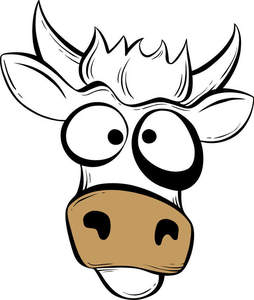
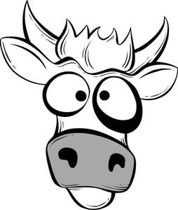

Trade Mark Journal No.2025/013 28 March 2025
UK00004158844 11 February 2025 (18,21,25,29,30,32,35,43)
Mark 1

Mark 2

- Class 18
- Bags; luggage, trunks, travel bags, backpacks; tote bags; garment bags; leisure bags, sports bags, holdalls, cases, rucksacks; overnight bags; handbags; shopping bags; shoulder bags; sports bags; toiletry and cosmetic bags; wash bags; tie cases; briefcases; document cases; wallets; leather wallets; credit card cases; key cases; purses; walking sticks, umbrellas and parasols; luggage tags; clothing for animals.
- Class 21
- Utensils and containers for household or kitchen purposes; tableware; thermos flasks, containers and jars for drinks, refrigerating bottles and cooling devices for beverages for household purposes, cups; bottles; mugs; sports bottles; reusable bottles; plastic bottles; insulated bottles; flasks; drinking flasks; hip flasks; liqueur flasks; insulated flasks; vacuum flasks for holding drinks; picnic crockery; fitted picnic baskets; picnic boxes; non-electric portable cool boxes; cool boxes; insulated portable containers for ice, food or beverages; portable ice chests for ice, food or beverages; thermal insulated bags for ice, food or beverages; beverageware; drinkware; temperature-retaining drinking vessels; insulated jugs; jugs.
- Class 25
- Clothing; footwear; headgear; gloves, scarves, shawls, belts, braces, ties, neckwear; boots, shoes, slippers, flip-flops, sandals; headscarves, scarves, neck ties, ties, coats, jackets, trousers, pullovers, cardigans, shirts, T-shirts, sweatshirts, hoodies, jeans, shorts, boxer shorts, underwear, pyjamas, dressing gowns, socks, tights, hats, waistcoats, suits, raincoats, blouses, skirts, dresses, beachwear, rugby shirts, polo-shirts, jumpers, caps, baseball caps, hats, sportswear, nightwear, vests, lingerie, hosiery; fascinators; bandeaus; headbands, swimwear.
- Class 29
- Dairy products, milk and milk products; flavoured milk beverages; milk beverages; milk drinks; beverages made from milk; milk beverages with high milk content; milk beverages containing fruits; beverages having a milk base; milk based drinks; beverages consisting principally of milk; flavoured milk drinks; milk drinks containing fruits; flavoured milk powder for making drinks; drinking yoghurts; yoghurt; dairy puddings; dairy desserts; dairy-based beverages; drinks made from dairy products; yoghurt based drinks; yoghurt drinks; fromage frais, mousses; preserved, dried and cooked fruits and vegetables; jellies; jams; yoghurt products; products consisting wholly of or principally wholly of yoghurt; yoghurts incorporating jellies, jams, fruits, fruit sauces, fruit purees, chocolate, nuts, cereals, cereal products or cereal preparations as a condiment, flavouring or ingredient thereof; milk shakes and flavoured milk drinks; powdered milk; powdered milk drinks; powdered preparations containing milk for use in making beverages; dried milk powder; deserts made of milk and cream; cream; spreads; cheese; food products consisting of or including milk as the predominant ingredient; whitening agents for coffee and for tea.
- Class 30
- Cereals; preparations made from cereals; confectionary; sweets; cakes; biscuits; flavourings other than essential oils; beverages with a chocolate, cocoa or coffee base and containing milk; chocolate beverages containing milk; chocolate-based beverages with milk; coffee, coffee extracts, coffee-based preparations and beverages; coffee based drinks; coffee beverages; iced coffee; artificial coffee, artificial coffee extracts, preparations and beverages made with artificial coffee; tea, tea extracts, preparations and beverages made with tea; iced tea; powder for making beverages; powdered preparations containing flavourings for use in making beverages; malt- based preparations for human consumption; cocoa, powdered preparations containing cocoa for use in making beverages; cocoa-based preparations and beverages; cocoa powder; chocolate-based preparations and beverages; drinking chocolate; ice creams, dairy ice cream, ice desserts, sorbets, frozen yogurts, edible ices, water ices, powders and binding agents (included in this class) for making edible ices and/or water ices and/or sorbets and/or ice confectioneries and/or iced cakes and/or ice- creams and/or ice desserts and/or frozen yogurts; puddings and desserts (included in this class); pancakes and tarts; honey; treacle; golden syrup; jelly; dairy confectionery; flavourings other than non-essential oil; cheesecake; sauces; fruit sauces; condiments; cocoa and cocoa based drinks.
- Class 32
- Non-alcoholic drinks and preparations for making non-alcoholic drinks; fruit drinks and fruit juices; vegetable drinks and vegetable juices; mineral water; flavoured water; aerated beverages; syrups and other preparations for making beverages; isotonic sports beverages; non-alcoholic sports drinks; concentrates for use in the preparation of soft drinks; soft drinks; sports drinks.
- Class 35
- Retail and wholesale services relating to dairy products, milk and milk products, flavoured milk beverages, milk beverages, milk drinks, beverages made from milk, milk beverages with high milk content, milk beverages containing fruits, beverages having a milk base, milk based drinks, beverages consisting principally of milk, flavoured milk drinks, milk drinks containing fruits, flavoured milk powder for making drinks, drinking yoghurts, yoghurt and dairy puddings; Retail and wholesale services relating to dairy desserts, dairy-based beverages, drinks made from dairy products, yoghurt based drinks, yoghurt drinks, fromage frais, mousses, preserved, dried and cooked fruits and vegetables, jellies, jams, yoghurt products, yoghurt drinks, products consisting wholly of or principally wholly of yoghurt, yoghurts incorporating jellies, jams, fruits, fruit sauces, fruit purees, chocolate, nuts, cereals and cereal products or cereal preparations as a condiment; Retail and wholesale services relating to flavouring or ingredient thereof, soya milk and soya milk products, milk shakes and flavoured milk drinks, milk substitutes, powdered milk, powdered milk drinks, powdered preparations containing milk for use in making beverages, flavoured milk powder for making drinks, dried milk powder, deserts made of milk and cream, cream, spreads, cheese and food products consisting of or including milk as the predominant ingredient; Retail and wholesale services relating to whitening agents for coffee and for tea, cereals, preparations made from cereals, confectionary, sweets, cakes, biscuits, flavourings other than essential oils, beverages with a chocolate, cocoa or coffee base and containing milk, chocolate beverages containing milk, chocolate-based beverages with milk, coffee, coffee extracts, coffee-based preparations and beverages, coffee based drinks and coffee beverages; Retail and wholesale services relating to iced coffee, artificial coffee, artificial coffee extracts, preparations and beverages made with artificial coffee, tea, tea extracts, preparations and beverages made with tea, iced tea, powder for making beverages, powdered preparations containing flavourings for use in making beverages and malt- based preparations for human consumption; Retail and wholesale services relating to cocoa, powdered preparations containing cocoa for use in making beverages, cocoa-based preparations and beverages, cocoa powder, chocolate-based preparations and beverages, drinking chocolate, ice creams, dairy ice cream, ice desserts, sorbets and frozen yogurts; Retail and wholesale services relating to edible ices, water ices and powders and binding agents (included in this class) for making edible ices and/or water ices and/or sorbets and/or ice confectioneries and/or iced cakes and/or ice- creams and/or ice desserts and/or frozen yogurts; Retail and wholesale services relating to puddings and desserts (included in this class), pancakes and tarts, honey, treacle, golden syrup, jelly, dairy confectionery, flavourings other than non-essential oil, cheesecake, sauces, fruit sauces, condiments, cocoa and cocoa based drinks and non-alcoholic drinks and preparations for making non-alcoholic drinks, fruit drinks and fruit juices; Retail and wholesale services relating to vegetable drinks and vegetable juices, mineral water, flavoured water, aerated beverages, syrups and other preparations for making beverages, isotonic sports beverages, non-alcoholic sports drinks, concentrates for use in the preparation of soft drinks, soft drinks and sports drinks; Retail and wholesale services relating to bags, luggage, trunks, travel bags, backpacks, tote bags, garment bags, leisure bags, sports bags, holdalls, cases, rucksacks, overnight bags, handbags, shopping bags, shoulder bags, sports bags, toiletry and cosmetic bags, wash bags, tie cases, briefcases, document cases, wallets, leather wallets, credit card cases, key cases, purses, walking sticks, umbrellas and parasols, luggage tags, clothing for animals, clothing, footwear, headgear, gloves, scarves, shawls, belts, braces, ties, neckwear, boots, shoes, slippers, flip-flops, sandals, headscarves, scarves, neck ties, ties, coats, jackets, trousers, pullovers, cardigans, shirts, T-shirts, sweatshirts, hoodies, jeans, shorts, boxer shorts, underwear, pyjamas, dressing gowns, socks, tights, hats, waistcoats, suits, raincoats, blouses, skirts, dresses, beachwear, rugby shirts, polo-shirts, jumpers, caps, baseball caps, hats, sportswear, nightwear, vests, lingerie, hosiery, fascinators, bandeaus, headbands, swimwear, utensils and containers for household or kitchen purposes, tableware, thermos flasks, containers and jars for drinks, refrigerating bottles and cooling devices for beverages for household purposes, cups, bottles, mugs, sports bottles, reusable bottles, plastic bottles, insulated bottles, flasks, drinking flasks, hip flasks, liqueur flasks, insulated flasks, vacuum flasks for holding drinks, picnic crockery, fitted picnic baskets, picnic boxes, non-electric portable cool boxes, cool boxes, insulated portable containers for ice, food or beverages, portable ice chests for ice, food or beverages, thermal insulated bags for ice, food or beverages, beverageware, drinkware, temperature-retaining drinking vessels, insulated jugs, jugs.
- Class 43
- Provision of food and drink; restaurants; cafes; coffee houses; snack bars; catering services; mobile catering services; outside catering; providing of food and drink via a mobile truck.
Shaken Udder Limited
Representative: Dummett Copp LLP